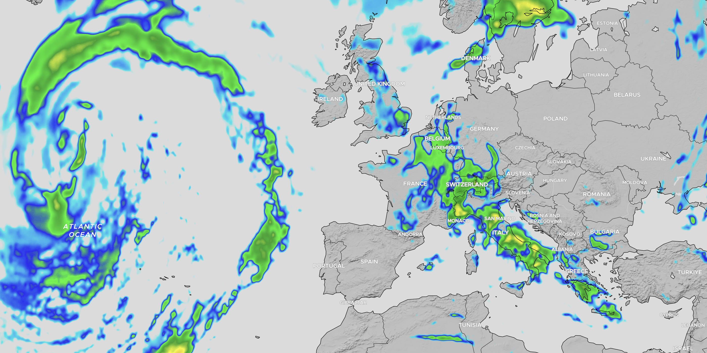

Codex
Quick guide for the radar view and the
map view.
Radar view
The radar layer shows precipitation intensity. Stronger color = heavier rain.
Blue
Light rain
Light rain
Green
Moderate rain
Moderate rain
Yellow
Heavy showers
Heavy showers
Orange
Storm
Storm
Radar is an estimate (reflection-based). Wind and timing can shift
rain. Use it as awareness, not as a guarantee.

Map view (spots)
The map shows community spots as markers. Your player icon shows your location (if you allow it).
- Click a spot → opens the spot popup (photo + info)
- Click the player icon → opens your player popup
- Click empty map → shows coordinates (with copy button)
Tip: use the coordinate popup to quickly copy lat/lng when you want
to submit a new spot.